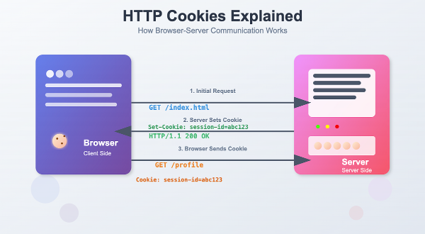
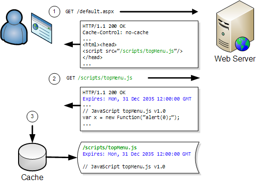
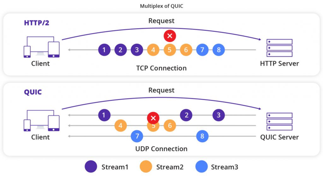
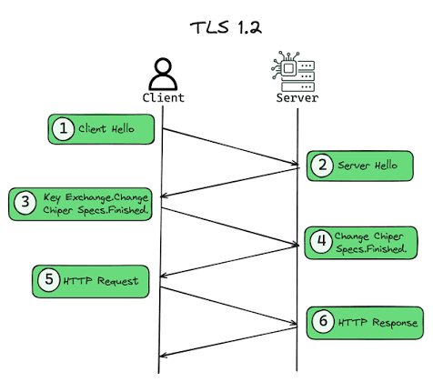

Key HTTP Concepts
Understanding the web requires familiarity with these core technical concepts:
- Stateless Protocol: Base HTTP is stateless, meaning the server does not retain any memory or data about the client between consecutive requests. Every transaction is treated as a new event.
-
Cookies: Because HTTP is stateless, cookies are used to restore a user's specific context. A cookie is a small file saved by the web server to remember session details, creating the illusion of a continuous connection.

-
Caching: An architecture built into header semantics that allows browsers to save files locally and reuse them, preventing the need to download identical assets repeatedly.

- Head-of-Line Blocking: A processing issue where if the first asset in a queue experiences trouble loading or delays, all subsequent assets are blocked from processing.
- Multiplexing: A solution introduced in HTTP/2 that chops requests and responses into tiny binary frames, interleaves them, and sends them down a single TCP connection, effectively turning multiple slow lanes into a single high-speed highway.
-
QUIC: A protocol created by Google using User Datagram Protocol (UDP) that replaces TCP in HTTP/3. It manages streams independently to eliminate transport-level blocking.

-
Transport Layer Security (TLS): A cryptographic wrapper used by HTTPS to protect standard HTTP traffic, ensuring data confidentiality and integrity during transit.
